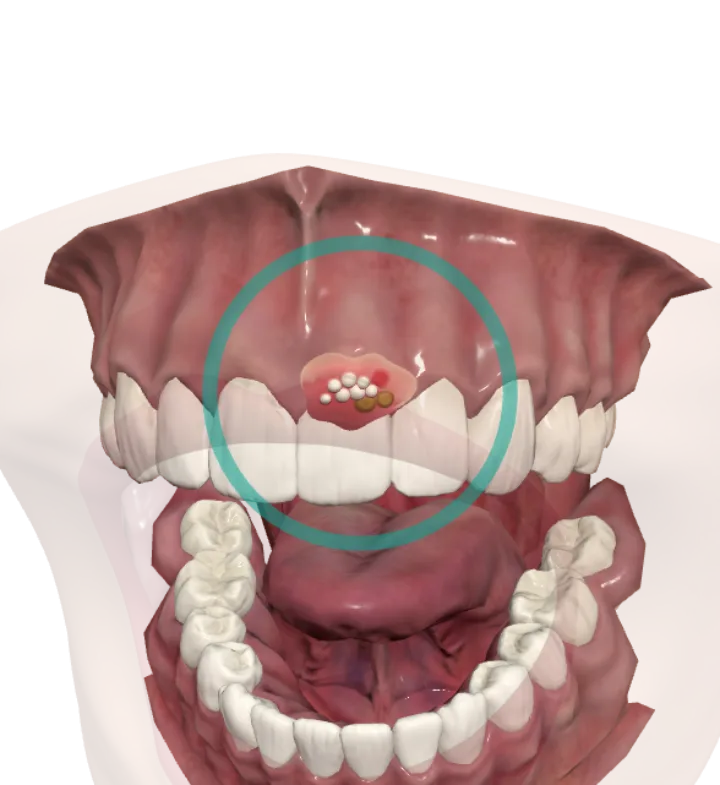

Тренажёр для студентов-стоматологов
Виртуальный пациент
У каждого пациента свои болезни и лекарства. Осмотри полость рта в 3D, найди поражение и подбери препарат, который поможет и не навредит.
- 7 клинических случаев
- стоматология в 3D и терапия
- разбор каждого варианта

Как проходит случай
Карта пациента
Возраст, хронические болезни, лекарства, которые он уже принимает, жалобы и данные осмотра.
Осмотр в 3D
Крути модель пальцем. Кольцо показывает, где поражение, а режим «Прозрачно» — что скрыто за губами и щеками. В терапии вместо 3D — схема тела.
Выбор препарата
Четыре варианта в случайном порядке. После ответа — разбор каждого и индивидуальный подход к этому пациенту.
Найди ошибку ИИ
ИИ-ассистент отвечает уверенно — и тогда, когда ошибается. В каждом случае есть его план лечения: отметь строки с ошибками, а разбор покажет, чем они опасны для этого пациента.
Ответ ИИ-ассистента · случай 2
2Для уменьшения боли — бензидамин в форме раствора для местного применения.
3При сильной боли добавить кетопрофен в таблетках — он надёжнее снимет воспаление.Ошибка найдена